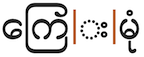
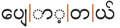
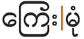
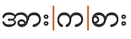
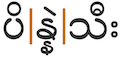

Graphemes
This section is still undergoing research and development.
Grapheme clusters alone are not sufficient to represent typographic units in Burmese. Stacks occur and must not be split apart by edit operations that visually change the text (such as letter-spacing, first-letter highlighting, and line breaking). For those operations one needs to segment the text using orthographic syllables, which string grapheme clusters together with 1039,
which has an Indic Syllabic Category of Invisible_Stacker.
Burmese uses different code points for indicating syllable-final characters and for stacking, which makes it much easier to manage segmentation.
However, unusually, Burmese doesn't absorb all combining characters after a base into a single grapheme cluster. Right-rendered, spacing marks (vowel signs and tone marks) are grapheme clusters in their own right.
Grapheme clusters
(Base Combining_mark*) | Right_spacing_combining_mark | Tone_mark
Grapheme clusters only equate to Burmese typographic units some of the time. Furthermore, grapheme cluster boundaries for Myanmar text follow a specially called-out set of rules that include exceptions to the norm. Specifically, grapheme boundaries are introduced before spacing combining marks that are rendered to the right of the base, and before tone marks. These exceptions were introduced to support cursor movement, but are not useful for things like line-breaking.
When a grapheme cluster is comprised of a base plus combining marks it may include zero or more of the following types of character:
- Medial consonants [4] (see onsets)
- Dependent vowels [6], but not spacing vowel signs that are rendered to the right (see combiningV)
- Tone mark [1] (see tone_marks)
- Final consonants [1] (see finals)
- Pure killer [1] (see finals)
- Invisible stacker [1] (see clusters)
Burmese grapheme clusters that include a syllable nucleus usually begin with a consonant, but can also begin with an independent vowel. If one classes 1021 as an independent vowel, it is one that can be followed by vowel signs and tone marks; but otherwise independent vowels are typically followed by a tone mark only, if anything. Multiple vowel signs may follow a base.
Syllable codas, if not written using the anusvara combining mark, are normally written using a consonant letter followed by
103A,
which is always visible, and which doesn't create conjuncts.
The invisible stacker 1039 is used alone after a consonant to create a conjunct with a following grapheme cluster (see below).
The combining marks used in Burmese that start a new grapheme cluster include the following (there are others in the Myanmar Unicode blocks but they are used for other languages):
- Dependent vowels [2] that are rendered to the right and spacing (see combiningV)
- Tone mark [1] (see tone_marks)
The following examples show a variety of grapheme clusters:
Click on the text version of these words to see more detail about the composition.
|  | ကြေးမုံ |
| ထမင်းဆိုင် |
|
အားကစား |
|  | ပျော့တယ် |
| ပိန္နဲသီး |
| အင်္ဂါ |
Larger typographic units
(Base Invisible_Stacker)* Grapheme_cluster
Stacks generally appear only in word medial positions in Burmese (and do not occur across word boundaries, as they do in some other scripts). The kind of typographic unit that includes stacks cannot be realised using Unicode grapheme clusters, which create break after a virama rather than including the following consonants.
Editorial operations that change the visual appearance of the text, such as letter-spacing, first-letter highlighting, line-breaking, and justification, should never split conjunct forms apart. For this reason, an alternative way of segmenting graphemes is needed. This may not apply, however, for some other operations such as cursor movement or backwards delete.
Where conjuncts appear, a typographic unit contains multiple grapheme clusters. The non-final grapheme clusters all end with 1039, and the final grapheme cluster begins with a consonant.
The kinzi is the sequence င်္ [U+1004 MYANMAR LETTER NGA + U+103A MYANMAR SIGN ASAT + U+1039 MYANMAR SIGN VIRAMA], and is unusual in that the first consonant in the cluster appears above the second, rather than the normal arrangement where the second is subjoined to the first. It is also unusual in that it does this even though the first consonant is followed by an asat sign. Nevertheless, it and the following consonant still follow the general orthographic syllable pattern.
The following words contain typographic units which begin with a consonant cluster:
Click on the text version of these words to see more detail about the composition.
|  | ကြေးမုံ |
| ထမင်းဆိုင် |
|  |
အားကစား |
| ပျော့တယ် |
|  | ပိန္နဲသီး |
| အင်္ဂါ |
Browser behaviour
Test in your browser. The 2 words on the left test grapheme clusters only; the 2 on the right include stacks. First, the text is displayed in a contenteditable paragraph, then in a textarea. Results are reported for Gecko (Firefox), Blink (Chrome), and WebKit (Safari) on a Mac.
ကား ကြေးမုံ ပိန္နဲသီး ဥစ္စာ
Cursor movement. Move the cursor through the text.
Gecko steps through the whole text using combining character sequences (CCS), rather than grapheme clusters. In other words, it doesn't stop before spacing combining characters rendered to the right of the base, or before tone marks, but treats them as part of the typographic unit that includes the base. It takes 2 steps to get through the stacks, one grapheme cluster at a time. Blink steps through all words using grapheme clusters, however this means that the cursor appears to stand still sometimes, or appears in the middle of a sequence. WebKit steps through using CSS's but also treats orthographic syllables as a single unit (ie. it steps over a stack and all associated combining characters in one jump).
Selection. Place the cursor next to a character and hold down shift while pressing an arrow key.
The behaviour is the same as for cursor movement. This has the effect of sometimes appearing to highlight backwards in Blink.
Deletion. Forward deletion works in the same way as cursor movement. The backspace key deletes code point by code point, except that WebKit deletes both the virama and the ZWJ at the same time.
Line-break. See this test. The CSS sets the value of the line-break property to anywhere. Pad the start of the container with characters to slowly push the text off the first line.
Gecko moves stacks to the next line as a single unit, except when the kinzi is involved, and otherwise the break points are assigned after each CCS, rather than by grapheme cluster. Blink and WebKit move stacks to the next line as a single unit, but otherwise moves text a grapheme cluster at a time – which means that combining characters can sit alone at the beginning of a line.